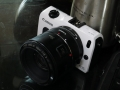

山水怡然烟雨中2015-01-12 23:434.58 分
操作性 5.00耐用性 4.50性价比 5.00解像力 4.50色彩还原 4.50机械结构 4.00
党来了2014-10-14 11:224.75 分
操作性 5.00耐用性 5.00性价比 5.00解像力 4.50色彩还原 4.50机械结构 4.50
dmccry2014-09-29 10:234.08 分
操作性 3.50耐用性 4.00性价比 5.00解像力 4.50色彩还原 4.50机械结构 3.00
浪仙2014-08-02 12:053.83 分
操作性 4.00耐用性 4.00性价比 5.00解像力 4.50色彩还原 4.00机械结构 1.50

halflife1272014-06-26 16:004 分
操作性 3.00耐用性 4.50性价比 5.00解像力 4.50色彩还原 4.00机械结构 3.00
自由引导人民2014-06-04 11:473.75 分
操作性 3.50耐用性 4.00性价比 5.00解像力 3.00色彩还原 3.00机械结构 4.00
Living2014-05-10 23:024 分
操作性 4.50耐用性 3.00性价比 5.00解像力 4.00色彩还原 4.50机械结构 3.00
judge198510262014-01-14 14:124.08 分
操作性 4.00耐用性 3.50性价比 5.00解像力 4.00色彩还原 4.50机械结构 3.50
xieyulin2013-10-24 21:064.17 分
操作性 5.00耐用性 4.00性价比 5.00解像力 4.00色彩还原 4.00机械结构 3.00
iwykhmily2013-10-19 14:364.42 分
操作性 4.50耐用性 5.00性价比 5.00解像力 4.50色彩还原 4.50机械结构 3.00
fenyuat2013-09-26 22:144.42 分
操作性 4.50耐用性 4.00性价比 5.00解像力 4.50色彩还原 5.00机械结构 3.50
十八刀2013-07-16 07:384 分
操作性 5.00耐用性 3.00性价比 5.00解像力 4.00色彩还原 4.00机械结构 3.00
darevil2013-07-15 15:174 分
操作性 4.00耐用性 3.00性价比 5.00解像力 4.50色彩还原 4.50机械结构 3.00
wql5762012-05-09 18:434.42 分
操作性 4.50耐用性 4.00性价比 5.00解像力 4.50色彩还原 4.50机械结构 4.00
quanbaohua2012-05-07 18:234.25 分
操作性 4.50耐用性 4.00性价比 5.00解像力 4.00色彩还原 4.00机械结构 4.00
wwwlh2012-04-05 16:473.92 分
操作性 3.50耐用性 3.50性价比 5.00解像力 4.00色彩还原 4.00机械结构 3.50
macawxie2012-03-28 16:464.25 分
操作性 4.00耐用性 4.00性价比 5.00解像力 4.50色彩还原 4.50机械结构 3.50
楚留光2012-02-24 18:074.25 分
操作性 3.50耐用性 3.50性价比 5.00解像力 5.00色彩还原 4.50机械结构 4.00
Z号巡洋舰2012-01-30 20:394.67 分
操作性 5.00耐用性 4.50性价比 5.00解像力 4.50色彩还原 4.50机械结构 4.50
UVfilter2012-01-26 12:094.08 分
操作性 4.00耐用性 4.00性价比 5.00解像力 4.00色彩还原 4.00机械结构 3.50
十五的萝柚2012-01-10 12:403.92 分
操作性 4.00耐用性 4.00性价比 4.50解像力 4.00色彩还原 4.00机械结构 3.00
wsy829380592011-12-25 16:024.17 分
操作性 4.50耐用性 4.50性价比 5.00解像力 4.00色彩还原 4.00机械结构 3.00
白云飞BYF2011-12-25 00:464.83 分
操作性 5.00耐用性 5.00性价比 5.00解像力 4.50色彩还原 5.00机械结构 4.50
临着雨2002-12-04 13:224.5 分
操作性 5.00耐用性 2.00性价比 5.00解像力 5.00色彩还原 5.00机械结构 5.00
yxh2002-10-07 17:494.08 分
操作性 4.50耐用性 3.50性价比 5.00解像力 4.00色彩还原 4.00机械结构 3.50
lantian2002-08-17 21:303.83 分
操作性 3.50耐用性 3.00性价比 5.00解像力 4.50色彩还原 4.00机械结构 3.00
水中月2002-06-19 17:073.92 分
操作性 3.50耐用性 3.00性价比 5.00解像力 4.50色彩还原 4.50机械结构 3.00
夜读经史2002-05-16 15:303 分
操作性 2.50耐用性 1.50性价比 5.00解像力 4.00色彩还原 4.00机械结构 1.00
中性灰2002-04-19 00:543.17 分
操作性 3.00耐用性 2.50性价比 3.50解像力 4.00色彩还原 3.50机械结构 2.50
shi.bo2002-04-17 15:234 分
操作性 4.50耐用性 3.00性价比 5.00解像力 4.00色彩还原 4.50机械结构 3.00
SilentLove2002-04-13 16:324.08 分
操作性 3.00耐用性 3.50性价比 5.00解像力 5.00色彩还原 5.00机械结构 3.00
fruitbear2002-04-12 15:093.92 分
操作性 3.50耐用性 2.50性价比 5.00解像力 5.00色彩还原 5.00机械结构 2.50